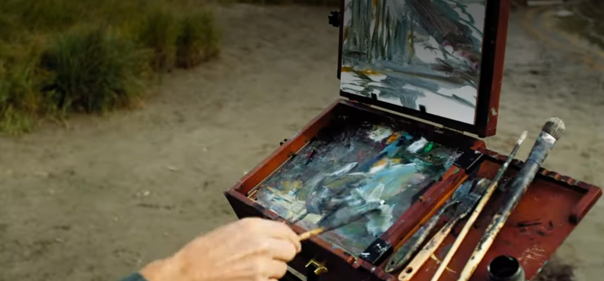
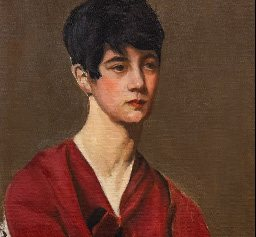
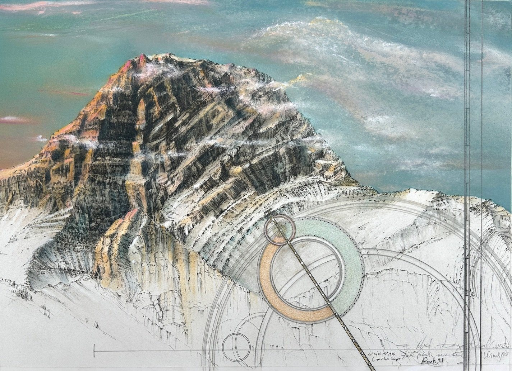
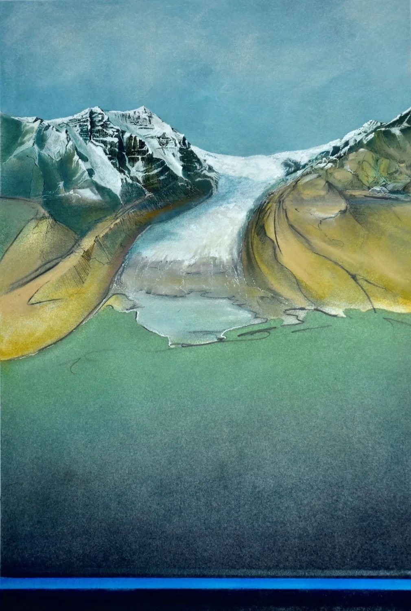
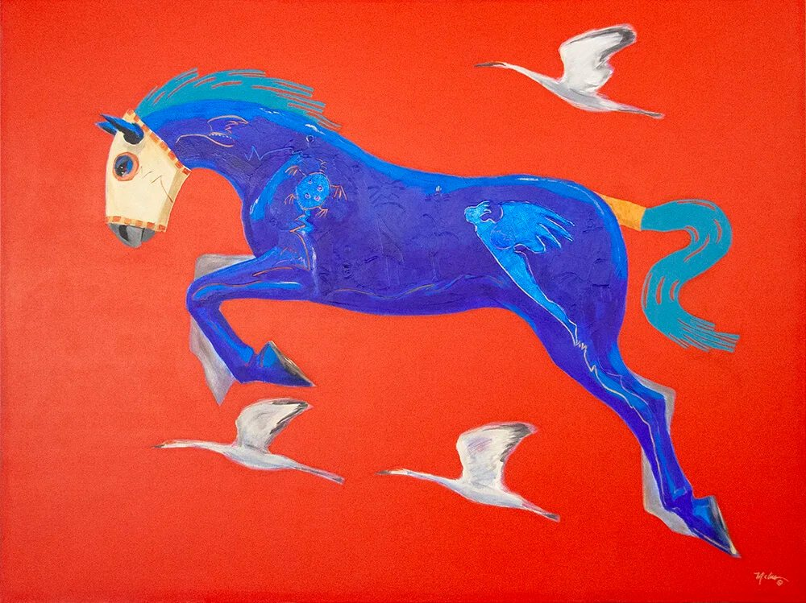
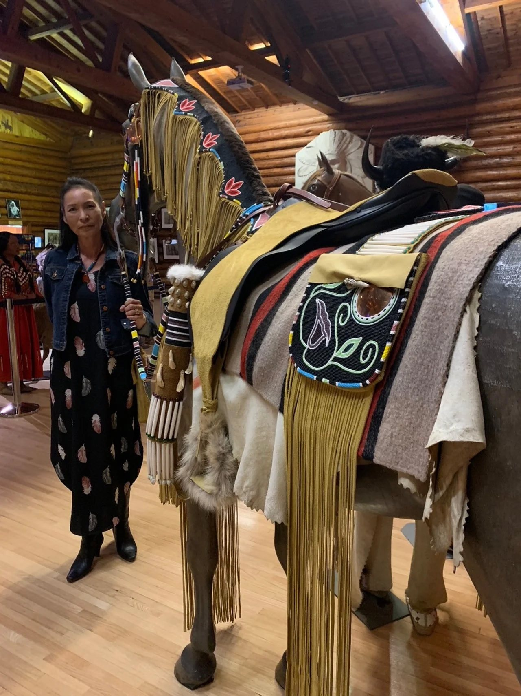
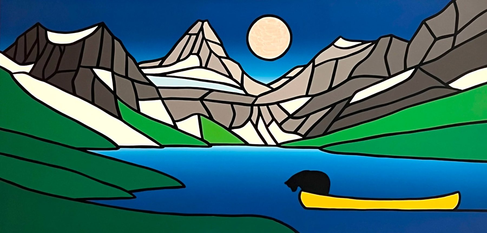

Banff Culture Collection

When our Eyes Touch
Portraits by Peter and Catharine Whyte, chosen from the museum’s own collection, follow the couple from art school to a lifetime of painting the people around them. In the Rummel Gallery, open daily 10 am to 5 pm at 111 Bear Street.
Learn more

Find New Stories in Banff
Stories fashioned in paint, pixels and printer’s ink. Caught on film. Expressed through language. Sculpted in stone or clay. Embodied in heritage buildings and sacred lands.
Learn about thousands of years of history in this incredible geography. Experience the vibrancy of contemporary mountain voices.
Discover Banff mountain arts, culture and heritage. Explore and enjoy.
The Banff Culture Collection includes galleries, museums, educators, artists, performers and animators. Our spaces, exhibits and expressions speak to the diversity and universality of human creativity.
 Banff Centre Mountain Film and Book FestivalFestival · Banff Centre
Banff Centre Mountain Film and Book FestivalFestival · Banff Centre
Willock & Sax GalleryGallery · 210 Bear St
Canada House GalleryGallery · 201 Bear St
Buffalo Nations MuseumMuseum · 1 Birch Ave
The Carter-Ryan GalleryGallery · 229 Bear St Walter Phillips GalleryGallery · Banff Centre
Walter Phillips GalleryGallery · Banff Centre Bison CourtyardCourtyard · 211 Bear St
Bison CourtyardCourtyard · 211 Bear St Town of Banff Community Art CommitteePublic art · Townsite
Town of Banff Community Art CommitteePublic art · Townsite Cave and Basin National Historic SiteHistoric site · 311 Cave Ave
Cave and Basin National Historic SiteHistoric site · 311 Cave Ave Historic Luxton Home MuseumMuseum · Beaver St
Historic Luxton Home MuseumMuseum · Beaver St Bowstrings BanffHeritage foundation · Banff
Bowstrings BanffHeritage foundation · Banff Whyte Museum of the Canadian RockiesMuseum · 111 Bear St
Whyte Museum of the Canadian RockiesMuseum · 111 Bear St Mountain GalleriesGallery · Fairmont Banff Springs
Mountain GalleriesGallery · Fairmont Banff Springs Banff Public LibraryLibrary · 101 Bear St
Banff Public LibraryLibrary · 101 Bear St Town of Banff Heritage CorporationHeritage · Banff
Town of Banff Heritage CorporationHeritage · Banff Banff Poet Laureate CommitteeWords · Banff
Banff Poet Laureate CommitteeWords · Banff Brandon T. BrownPhotographer · Canadian Rockies
Brandon T. BrownPhotographer · Canadian Rockies Paper DenShop · 208 Caribou St
Paper DenShop · 208 Caribou St Lux Cinema BanffCinema · 229 Bear St
Lux Cinema BanffCinema · 229 Bear St Banff Park Museum National Historic SiteHistoric site · 91 Banff Ave
Banff Park Museum National Historic SiteHistoric site · 91 Banff Ave
Banff Museum & Gallery Hop
 Bow River
Banff Ave
Bear St
Beaver St
Buffalo St
Caribou St
Wolf St
01Banff Centre, 1 km →
02
03
04
05
06
07
08← Cave and Basin, 1.4 km
09
10
11Fairmont Banff Springs, 1.6 km ↘
12
13
14
15
Bow River
Banff Ave
Bear St
Beaver St
Buffalo St
Caribou St
Wolf St
01Banff Centre, 1 km →
02
03
04
05
06
07
08← Cave and Basin, 1.4 km
09
10
11Fairmont Banff Springs, 1.6 km ↘
12
13
14
15
Most of the Collection is a short walk apart. Start anywhere on Bear Street and hop between galleries, museums and heritage sites, at your own pace.
The Banff Centre, Cave and Basin and the Fairmont Banff Springs are a short bus ride away. Each fall, during the Banff Mountain Film and Book Festival, members open new exhibitions, murals, artist talks and guided tours for the Festival Gallery Hop.
- 01Banff Centre Mountain Film and Book Festival
- 02Walter Phillips Gallery
- 03Willock & Sax Gallery
- 04Canada House Gallery
- 05Buffalo Nations Museum
- 06Bison Courtyard
- 07The Carter-Ryan Gallery
- 08Cave and Basin National Historic Site
- 09Historic Luxton Home Museum
- 10Whyte Museum of the Canadian Rockies
- 11Mountain Galleries
- 12Banff Public Library
- 13Paper Den
- 14Lux Cinema Banff
- 15Banff Park Museum National Historic Site